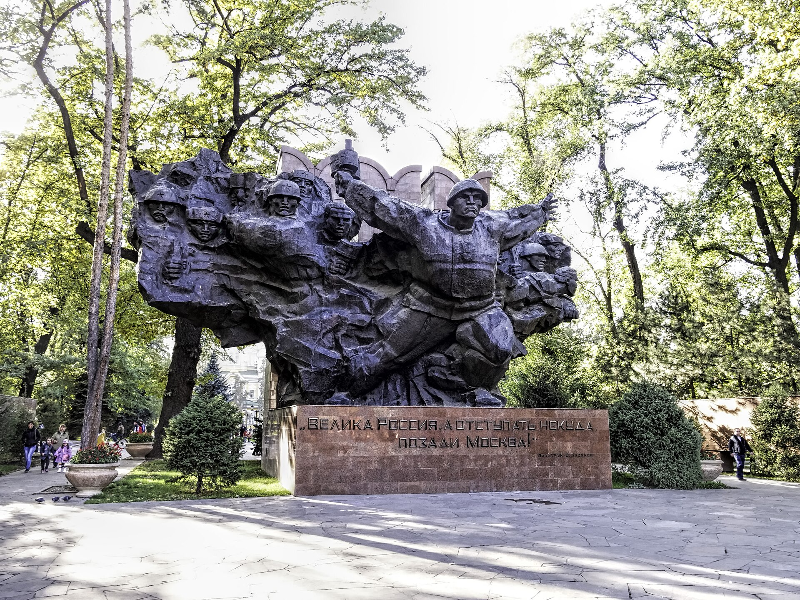

В Таласской области строится комплекс переработки топлива стоимостью 350 млн долларов
11 сентября Министерство экономики Кыргызстана и казахстанская компания QAZAQ BITUM Processing подписали меморандум о намерениях.

11 сентября 2026 года Министерство экономики и коммерции Кыргызстана и казахстанская компания «QAZAQ BITUM Processing» подписали меморандум о намерениях по строительству комплекса переработки топлива в Таласской области. Примерная стоимость проекта — 350 млн долларов.
Документ подписали министр экономики и коммерции Кыргызстана Бакыт Сыдыков и директор казахстанской компании Ержан Бейсебаев. В церемонии принял участие президент Садыр Жапаров.
Что будет производить комплекс
Проект рассчитан на переработку прямогонных бензиновых и дизельных фракций. Кроме того, на комплексе планируется производство битума, модифицированного полимерами (марки PG).
Битум считается основным материалом в дорожном строительстве. Разновидности с добавлением полимеров более устойчивы к высоким и низким температурам, поэтому применяются для дорог в горных районах.
- Место: Таласская область, Кыргызстан
- Инвестиции: ~350 млн долларов
- Инвестор: QAZAQ BITUM Processing (Казахстан)
- Продукция: переработка бензиновых и дизельных фракций, полимерно-битумные материалы
- Вид документа: меморандум о намерениях
Почему важен вопрос зависимости от импорта топлива
Кыргызстан импортирует значительную часть нефтяного топлива — в основном из России. Это делает внутренние цены зависимыми от конъюнктуры внешнего рынка и условий поставок.
Рост мировых цен на нефть в 2026 году был отмечен как один из факторов, усиливших инфляцию в Кыргызстане: годовой рост цен по состоянию на 24 августа составил 11,7 процента.
Поэтому повышение внутренних перерабатывающих мощностей считается одним из приоритетных направлений, объявленных правительством. В официальном заявлении проект объяснён целями снижения зависимости от импорта, укрепления промышленного потенциала Таласской области и поддержки отрасли строительных материалов.
Экономические связи с Казахстаном
Казахстан — один из основных торговых партнёров Кыргызстана, и оба государства являются членами Евразийского экономического союза. Поскольку в рамках союза таможенные барьеры низки, взаимные инвестиционные проекты налаживаются относительно легко.
В последние недели в Кыргызстане было объявлено несколько проектов иностранных инвестиций: 10 сентября — логистический центр «Сары-Таш» вблизи границы с Китаем (до 100 млн долларов), а 13 сентября был запущен завод золоторудного проекта Altyn Tor на основе индийских инвестиций.
Что неясно
Подписанный документ имеет статус меморандума. В нём не указаны сроки строительства, годовая мощность комплекса и схема поставки сырья.
Таласская область
Талас — область на северо-западе Кыргызстана, граничащая с Казахстаном. Её административный центр — город Талас.
Основу экономики области составляет сельское хозяйство; особое место здесь занимает выращивание фасоли, и значительная часть продукции экспортируется.
Промышленный же потенциал относительно ограничен. Размещение крупного производственного комплекса может стать для региона заметным изменением с точки зрения занятости и налоговых поступлений.
Продукция проекта
Комплекс рассчитан на переработку прямогонных бензиновых и дизельных фракций. Это процесс доведения промежуточных продуктов, полученных при первичной переработке нефти, до стандартов конечного топлива.
Второе направление — производство битума, модифицированного полимерами. Битум считается основным вяжущим материалом в дорожном строительстве.
Битум с добавлением полимеров более устойчив к высоким и низким температурам. Для таких государств, как Кыргызстан, с горным рельефом и резко континентальным климатом это свойство имеет практическое значение, поскольку дорожное покрытие летом нагревается до 50 градусов, а зимой промерзает при отрицательных температурах.
Зависимость от импорта топлива
Кыргызстан импортирует значительную часть нефтепродуктов. Основной поставщик — Россия; поставки осуществляются на льготных условиях в рамках Евразийского экономического союза.
Эта зависимость делает внутренние цены чувствительными к внешним факторам. Рост мировых цен на нефть в 2026 году был отмечен как один из факторов, усиливших инфляцию в стране: по состоянию на 24 августа годовая инфляция составила 11,7 процента.
Повышение внутренних перерабатывающих мощностей не устраняет ценовые колебания полностью, поскольку сырьё всё равно импортируется. Однако это позволяет оставить часть добавленной стоимости внутри страны.
Рамки Евразийского экономического союза
Кыргызстан и Казахстан являются членами Евразийского экономического союза. В рамках союза провозглашено свободное движение товаров, услуг, капитала и рабочей силы.
На практике это упрощает казахстанским инвесторам реализацию проектов в Кыргызстане: таможенное оформление упрощено, а технические регламенты общие.
Казахстан считается одним из основных торговых партнёров Кыргызстана, и инвестиционный поток между двумя государствами в последние годы расширился.
Сентябрьская волна инвестиций
Таласский проект стал одной из нескольких крупных инициатив, объявленных в Кыргызстане в сентябре 2026 года.
- 2 сентября: соглашение о транзитной торговле с Пакистаном, цель — довести торговлю до 200 млн долларов
- 10 сентября: меморандум по логистическому центру «Сары-Таш», инвестиции до 100 млн долларов
- 11 сентября: топливный комплекс в Таласской области, 350 млн долларов
- 13 сентября: запущен завод золоторудного проекта Altyn Tor, инвестиции 34,2 млн долларов
Большинство этих проектов находится на стадии меморандума или намерений, и их реализация будет зависеть от документов следующего этапа.
Экологические аспекты
Предприятия по переработке нефтепродуктов порождают вопросы выбросов в воздух, сточных вод и хранения отходов. В международной практике для таких проектов требуется документ по оценке воздействия на окружающую среду (EIA).
В официальных сообщениях не приводится информации об экологической экспертизе проекта и условиях использования водных ресурсов. Поскольку Таласская область является преимущественно сельскохозяйственным регионом, этот вопрос может быть значимым для местного населения.
Энергобаланс Кыргызстана
Кыргызстан получает значительную часть электроэнергии с гидроэлектростанций; крупнейшая из них — Токтогульская ГЭС на реке Нарын. Однако топливо, необходимое для отопления и транспорта, импортируется.
Зимой, когда уровень в водохранилищах снижается, возникает дефицит электроэнергии, и страна вынуждена импортировать её из соседних государств. Поэтому вопрос энергетической безопасности постоянно занимает место в повестке правительства.
В 2026 году государства региона продолжили работу по совместному финансированию Камбаратинской ГЭС-1; в проекте участвуют Кыргызстан, Казахстан и Узбекистан.
Дорожная инфраструктура
Производство полимерно-битумных материалов напрямую связано с дорожным строительством. Автомобильные дороги в Кыргызстане считаются основной транспортной сетью, поскольку железнодорожная сеть ограничена.
Дороги, связывающие юг и север страны, проходят через горные перевалы и зимой чувствительны к погодным условиям. Поэтому износостойкость дорожного покрытия является практическим вопросом.
Объявленный 10 сентября логистический центр «Сары-Таш» также рассчитан на грузопоток автомобильного направления; он расположен на дороге Ош — Сары-Таш — Иркештам.
Официальной информации об экологической экспертизе проекта и условиях использования водных ресурсов также не обнародовано. Таласская область считается преимущественно сельскохозяйственным регионом.